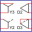
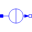

IMC_DCBrakingInduction machine with DC current braking |
|
Diagram
{kind=link}
Information
This information is part of the Modelica Standard Library maintained by the Modelica Association.
The stator windings of an induction machine are fed by a DC current, causing a stationary current space phasor. Since the rotor is turning, voltage is induced in the rotor cage which in turn drives rotor currents. This creates a braking torque.
Choose a layout and plot tauElectrical and tauShaft versus wMechanical.
Default machine parameters are used.
References
| [Fischer2017] | R. Fischer, Elektrische Maschinen, 17th ed., chapter 5.3.3., Hanser, ISBN 978-3-446-45218-3, 2017. |
Parameters (4)
| w0 |
Value: 2 * pi * imcData.fsNominal / imcData.p Type: AngularVelocity (rad/s) Description: Initial mechanical speed |
|---|---|
| JLoad |
Value: 4 * imcData.Jr Type: Inertia (kg·m²) Description: Load's moment of inertia |
| settings |
Value: Type: DcBrakeSettings |
| imcData |
Value: Type: IM_SquirrelCageData |
Components (10)
|  | settings |
Type: DcBrakeSettings |
|---|---|---|
| imcData |
Type: IM_SquirrelCageData |
|
| imc |
Type: IM_SquirrelCage |
|
| loadInertia |
Type: Inertia |
|
| terminalBox |
Type: TerminalBox |
|
| plugToPin1 |
Type: PlugToPin_p |
|
| plugToPin2 |
Type: PlugToPin_p |
|
| plugToPin3 |
Type: PlugToPin_p |
|
|  | constantCurrent |
Type: ConstantCurrent |
| ground |
Type: Ground |